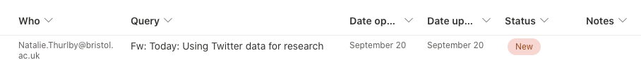
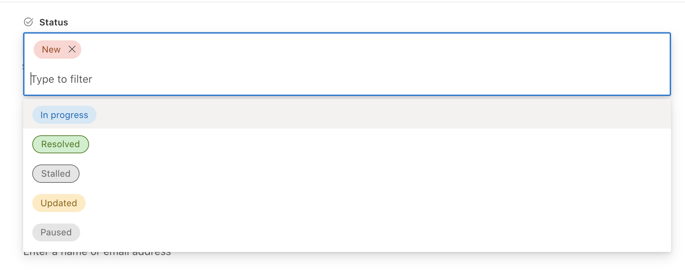
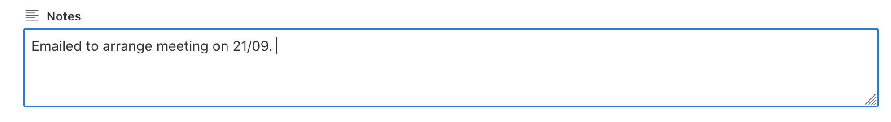
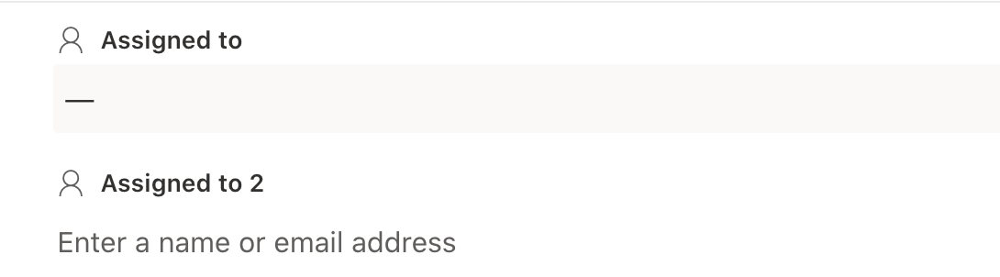
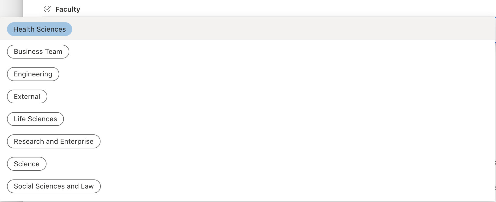
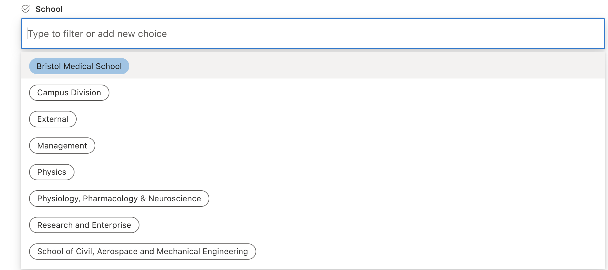
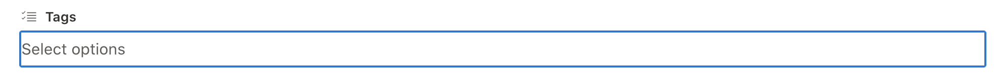

Ask-JGI tracker
Contents
Ask-JGI tracker#
In order to track the progress of individual Ask-JGI queries, and to gather information for reporting purposes, new emails received in the Ask-JGI mailbox automatically generate a ticket on the so-called Ask-JGI tracker, which can be found here.
See below for more information on the following:
Automatic ticket updates#
When a new email is received in the Ask-JGI mailbox an automated response is generated, which looks something like:
Thank you for your Ask-JGI enquiry. It has been received by our team
and you should receive a response within 5 working days.
Please feel free to reply to this email if you want to provide any
supplementary information to your question. Just make sure you either
reply directly to this email, or else include the phrase somewhere in
the email: {AskJGI-110}. This helps us to track how the AskJGI service
is used.
Suggested additional information:
1. Your research question
2. Any relevant papers / draft manuscripts etc.
3. A description of your data (and a sample if you can send it)
4. Any relevant analysis scripts/code that you have produced so far.
If you need a reply more urgently then please reply to this email and
we will aim to get back to you sooner.
Note the {AskJGI-110} in the text above. The number corresponds to the Ask-JGI ticket number (110 in this example), which increments with each newly received query. This number acts as a unique identifier for the email thread, which is then used to open a new ticket in the Ask-JGI tracker. All subsequent emails that contain this same identifier will be associated with the newly created ticket (so that the ticket gets updated with each new email in the thread).
Filling out the tracker#
When a new Ask-JGI query is received and an automatic reply is sent, a new ticket is opened on the Ask-JGI tracker. This will look something like the entry below:
Some of the information is automatically filled out, as shown in the image above. The Who field is updated with the email address of the query sender, the Query field is filled with the email title, and the date of the query (Date opened) and the last time the query was updated (Date updated – the date of the latest email in the thread associated with that query) are set.
Open the ticket by clicking on the title under the Query field heading. You will see the automatically set Who, Query, and dates fields:
2. If the title of the email is obscure or could be made more concise, change the Query field to something more meaningful and easy to understand. 3. The Status field is automatically set to “New” for newly opened tickets. Once you have started work on your query, this status should be changed to “In progress.”
4. The Notes field should be used to make any notes/supplementary details on the status of the query.
5. Add your name / email address under the Assigned to field. There is also an Assigned to 2 field. This can be used e.g. if you are working jointly on a query with another team member. Otherwise it can be left blank.
6. Select the Faculty that the person who submitted the query is associated with. This may require some Google searching if the information is not included in their email. Note that there is a drop down list for this, but new options can be added as free text. Please take care not to duplicate entries (e.g. Science and science would show up as different faculties and this is inconvenient for analytics and reporting later on).
7. Select the School that the person who submitted the query is associated with. Note that there is the option to select “External” for contacts from outside the University of Bristol.
8. Select all tags that apply from the drop-down list under the Tags field.
9. Record the number of hours spent on a given task in the Time Allocation field. This includes time taken to respond to emails, setting up and attending meetings with service users, and investigating the question itself (be it reviewing code, data, research, etc.). If you think a query is going to take more than 5 hours of your time, discuss this with your data science supervisor.